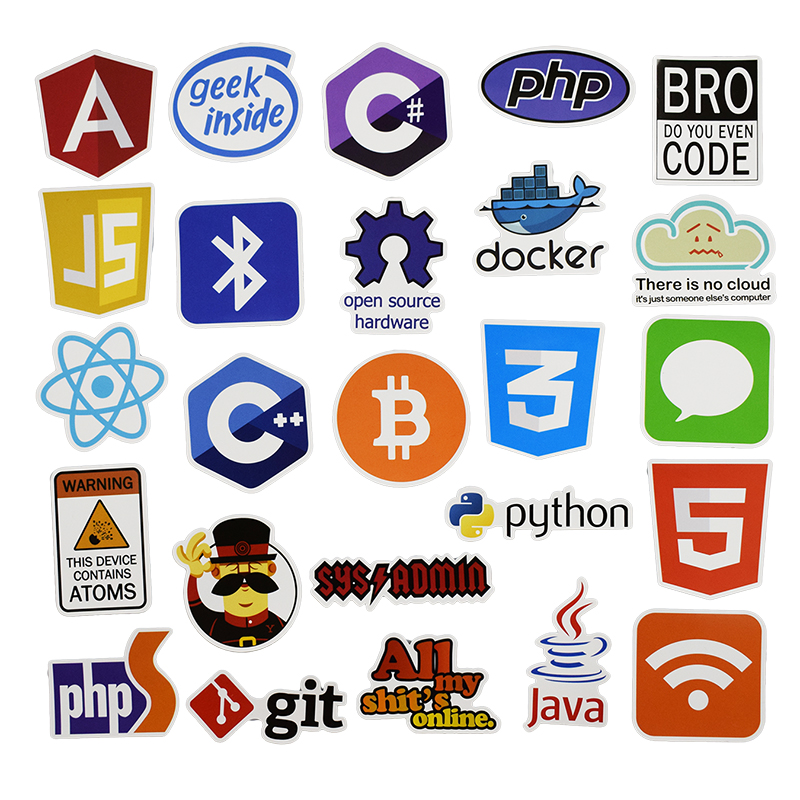

Choose a laungauage
laungauage
Languages,It is the first basic thong to know before coding.Finding a suitable language to code is the first step to do code.so select a languafe from given belowTop 10 Languages to code.
1. Python
Top 10 Popular Programming Languages Chart Number of jobs: 19,000 Average annual salary: $120,000 Benefits: Python is widely regarded as a programming language that’s easy to learn, due to its simple syntax, a large library of standards and toolkits, and integration with other popular programming languages such as C and C++. In fact, it’s the first language that students learn in the Align program, Gorton says. “You can cover a lot of computer science concepts quickly, and it’s relatively easy to build on.” It is a popular programming language, especially among startups, and therefore Python skills are in high demand. Drawbacks: Python is not suitable for mobile application development. Common uses: Python is used in a wide variety of applications, including artificial intelligence, financial services, and data science. Social media sites such as Instagram and Pinterest are also built on Python.2. JavaScript
Number of jobs: 24,000 Average annual salary: $118,000 Benefits: JavaScript is the most popular programming language for building interactive websites; “virtually everyone is using it,” Gorton says. When combined with Node.js, programmers can use JavaScript to produce web content on the server before a page is sent to the browser, which can be used to build games and communication applications that run directly in the browser. A wide variety of add-ons extend the functionality of JavaScript as well. Drawbacks: Internet browsers can disable JavaScript code from running, as JavaScript is used to code pop-up ads that in some cases can contain malicious content. Common uses: JavaScript is used extensively in website and mobile application development. Node.js allows for the development of browser-based applications, which do not require users to download an application.3. Java
Number of jobs: 29,000 Average annual salary: $104,000 Benefits: Java is the programming language most commonly associated with the development of client-server applications, which are used by large businesses around the world. Java is designed to be a loosely coupled programming language, meaning that an application written in Java can run on any platform that supports Java. As a result, Java is described as the “write once, run anywhere” programming language. Drawbacks: Java is not ideal for applications that run on the cloud, as opposed to the server (which is common for business applications). In addition, the software company Oracle, which owns Java, charges a licensing fee to use the Java Development Kit. Common uses: Along with business applications, Java is used extensively in the Android mobile operating system.4. C#
Number of jobs: 18,000 Average annual salary: $97,000 Benefits: Microsoft developed C# as a faster and more secure variant of C. It is fully integrated with Microsoft’s .NET software framework, which supports the development of applications for Windows, browser plug-ins, and mobile devices. C# offers shared codebases, a large code library, and a variety of data types. Drawbacks: C# can have a steep learning curve, especially for resolving errors. It is less flexible than languages such as C++. Common uses: C# is the go-to language for Microsoft ad Windows application development. It can also be used for mobile devices and video game consoles using an extension of the .NET Framework called Mono.5. C
Number of jobs: 8,000 Average annual salary: $97,000 Benefits: Along with Python and Java, C forms a “good foundation” for learning how to program, Gorton says. As one of the first programming languages ever developed, C has served as the foundation for writing more modern languages such as Python, Ruby, and PHP. It is also an easy language to debug, test, and maintain. Drawbacks: Since it’s an older programming language, C is not suitable for more modern use cases such as websites or mobile applications. C also has a complex syntax as compared to more modern languages. Common uses: Because it can run on any type of device, C is often used to program hardware, such as embedded devices in automobiles and medical devices used in healthcare.6. C++
Number of jobs: 9,000 Average annual salary: $97,000 Benefits: C++ is an extension of C that works well for programming the systems that run applications, as opposed to the applications themselves. C++ also works well for multi-device and multi-platform systems. Over time, programmers have written a large set of libraries and compilers for C++. Being able to use these utilities effectively is just as important to understanding a programming language as writing code, Gorton says. Drawbacks: Like C, C++ has complex syntax and an abundance of features that can make it complicated for new programmers. C++ also does not support run-time checking, which is a method of detecting errors or defects while software is running. Common uses: C++ has many uses and is the language behind everything from computer games to mathematical simulations.7. Go
Number of jobs: 1,700 Average annual salary: $93,000 Benefits: Also referred to as Golang, Go was developed by Google to be an efficient, readable, and secure language for system-level programming. It works well for distributed systems, in which systems are located on different networks and need to communicate by sending messages to each other. While it is a relatively new language, Go has a large standards library and extensive documentation. Drawbacks: Go has not gained widespread use outside of Silicon Valley. Go does not include a library for graphical user interfaces, which are the most common ways that end-users interact with any device that has a screen. Common uses: Go is used primarily for applications that need to process a lot of data. In addition to Google, companies using Go for certain applications include Netflix, Twitch, and Uber.8. R
Number of jobs: 1,500 Average annual salary: $93,000 Benefits: R is heavily used in statistical analytics and machine learning applications. The language is extensible and runs on many operating systems. Many large companies have adopted R in order to analyze their massive data sets, so programmers who know R are in great demand. Drawbacks: R does not have the strict programming guidelines of older and more established languages. Common uses: R is primarily used in statistical software products.9. Swift
Number of jobs: 1,800 Average annual salary: $93,000 Benefits: Swift is Apple’s language for developing applications for Mac computers and Apple’s mobile devices, including the iPhone, iPad, and Apple Watch. Like many modern programming languages, Swift has a highly readable syntax, runs code quickly, and can be used for both client-side and server-side development. Drawbacks: Swift can only be used on newer versions of iOS 7 and will not work with older applications. As a newer programming language, the code can be unstable at times, and there are fewer third-party resources available to programmers. Common uses: Swift is used for iOS and macOS applications.10. PHP
Number of jobs: 7,000 Average annual salary: $81,000 Benefits: PHP is widely used for server-side web development, when a website frequently requests information from a server. As an older language, PHP benefits from a large ecosystem of users who have produced frameworks, libraries, and automation tools to make the programming language easier to use. PHP code is also easy to debug. Drawbacks: As Python and JavaScript have gained popularity, PHP’s popularity has dropped. PHP is also known for its security vulnerabilities. According to Indeed, most PHP programmers take short-term roles that last less than one year. Common uses: PHP is the code running content-oriented websites such as Facebook, WordPress, and Wikipedia.Choose one from above languages
This is all about Languages.We all have hopes, dreams, and plans for the future. Whether you’re looking for a new opportunity, want to optimize your current job, or are simply searching for a new hobby, coding can help you get closer to your goals. And remember, anyone can learn how to code!